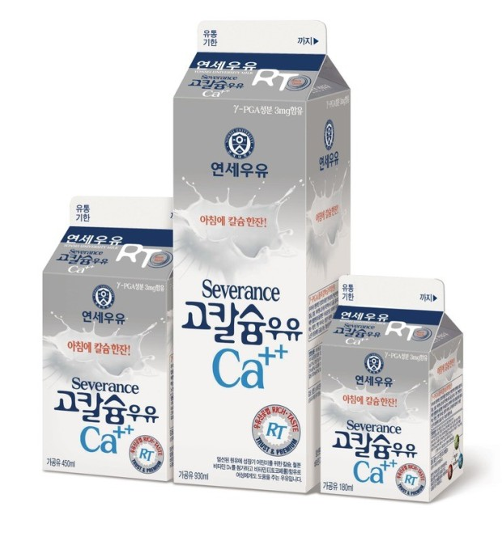

칼슘은 원자번호 20번의 원소로, 원소기호는 Ca이다. 주기율표에서는 2족(2A족)에 속하는 알칼리 토금속 원소의 하나로, 마그네슘 바로 아래에 있다. 칼슘은 무르고 은회색을 띠며, 다른 알칼리 토금속들과 마찬가지로 반응성이 커서 자연상태에서 원소 그 자체로는 존재하지 않고 화합물로만 존재한다. 화합물에서는 +2의 산화상태를 갖는다. 칼슘은 지각 무게의 약 3.6%를 차지하는 5번째로 풍부한 원소이고, 금속으로는 알루미늄과 철 다음으로 많다. 칼슘 광석은 초기 해양 생물의 화석 잔해물의 퇴적암으로 지구 표면에 광범위하게 분포되어 있는데, 대표적인 것들이 석회석, 백운석, 백악이다. 이외에도 대리석(석회석과 백운석의 변성암), 석고와 석고의 무수물, 형석, 인회석 등이 주요 칼슘 광석이다. 산호, 조개 껍질, 진주 등도 주로 탄산칼슘(CaCO3)으로 되어있으며, 동물의 뼈와 이는 주로 칼슘의 인산염으로 되어있다. 칼슘은 뼈와 치아의 구성 요소. 근육, 신경 기능 조절, 혈액 응고에 도움을 준다.
